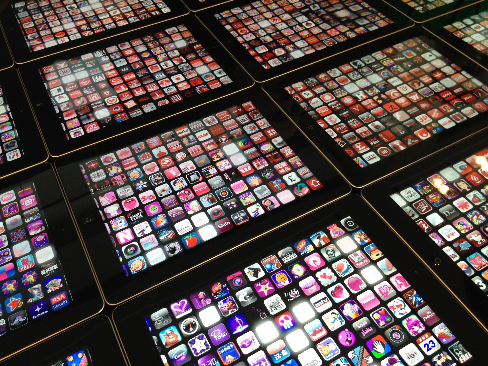

Page bouncing

Алексей Распопов, QAP Int
Objective-C приложение с UIWebView, в котором загружается контент
requestAnimationFrame для canvasJake Archibald все объяснил тут — vimeo.com/69385032
document.ontouchmove = function(event){event.preventDefault();};
Не позволяет использовать native-скроллинг в элементах
[[webView scrollView] setBounces: NO];
<meta name="format-detection" content="telephone=no">Событие click срабатывает с задержкой 300 мс
touchendtap
<meta name="viewport" content="width=device-width">
<meta name="viewport" content="initial-scale=1">
Объяснение тут — goo.gl/5rdJyc
Можно использовать событие resize
НЕЛЬЗЯ!
Только если вы пакуете приложение в обертку
UIWebView.allowsInlineMediaPlayback = YES;UIWebView.mediaPlaybackRequiresUserAction = NO;
position: absolute;)-webkit-transform: translateZ(0);transform
-webkit-transform: translateZ(0);